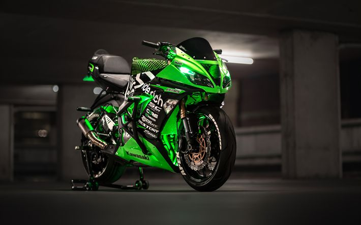
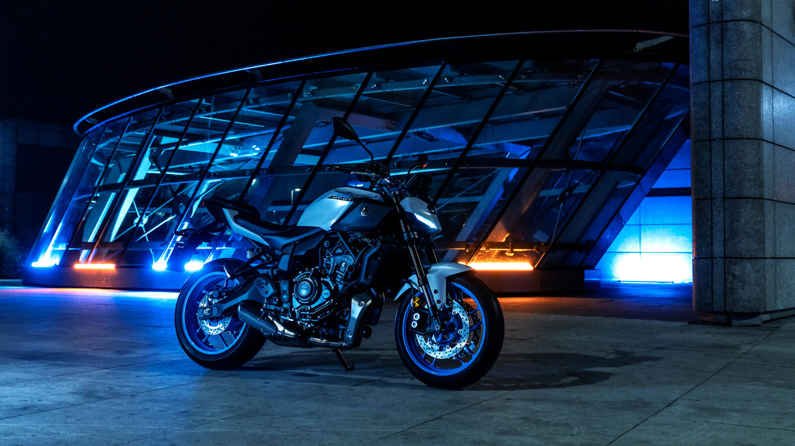

L'Art de la Vitesse
Découvrer l'histoire de Kawasaki et Yamaha, deux géant qui ont façonné l'asphalte depuis la nuit des temps. Des motos performants, fiables et RAPIDE
Kawasaki

La puissance brute et l'innovation verte.
Yamaha

L'harmonie entre l'homme et la machine.